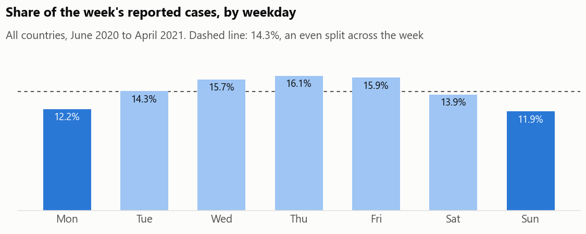

How far can daily COVID numbers be trusted?
Before using a dataset, check it. I tested the daily COVID-19 figures for 208 countries and found problems that change what the numbers mean.
The problem
In 2020 and 2021, daily case counts drove headlines and government decisions. But a number on a dashboard is only as good as the way it was collected.
Some countries skipped days, some reported a week’s cases all at once, and some corrected earlier mistakes with negative numbers.
What I did
- Checked every country’s figures for missing days, impossible values and gaps in testing data.
- Found the countries that reported in bursts and spread each burst back over the days it covered, without changing any country’s total.
- Measured how much reporting dips at weekends, and how the amount of testing affects death rates.
What I found
Bursts hide the real trend

Cameroon reported zero cases on 65% of days, then large totals at once: 9,668 on 1 April 2021 after five days of zeros. The blue line spreads each report back over the days it covered, which shows the real daily trend.
Weekends report less

Sundays and Mondays carry about a quarter fewer cases than Thursdays. Comparing one day with another without adjusting for this is misleading.
Testing changes the death rate
Countries that tested least had an average death rate of 2.86% among confirmed cases, against 1.31% for those that tested most. Where testing is thin, mostly the severe cases get found, so the share who die looks higher.
The vaccine gap
By 30 April 2021, 1% of Africans had had a first vaccine dose, against 21% of Europeans. Nigeria was at 0.58%.
What it means
The same checks apply to any operational data, including hospital and lab reports: find out how the numbers were produced before drawing conclusions from them.
For technical readers
MySQL (recursive queries, window functions), Python for the charts